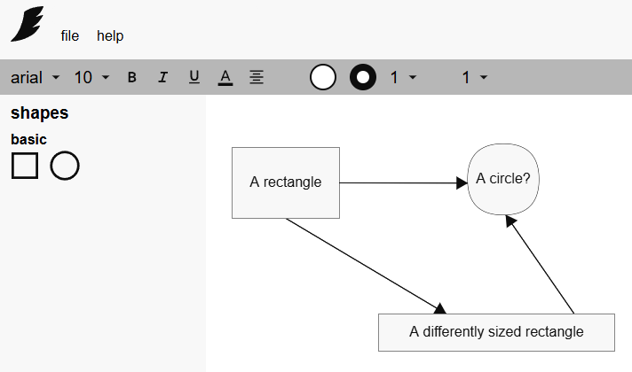
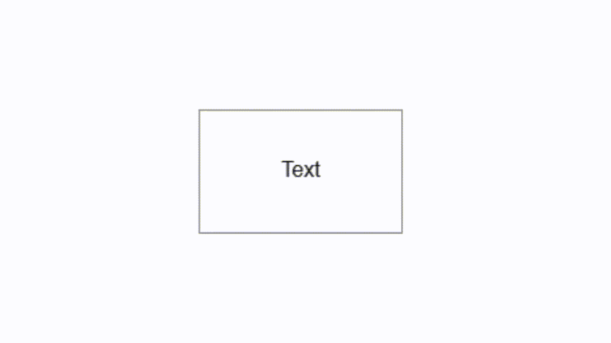
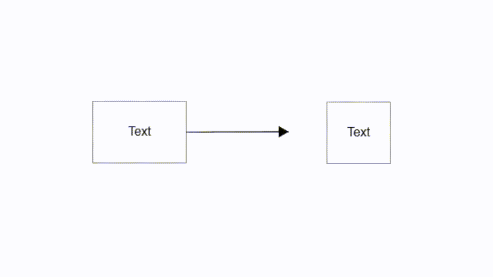
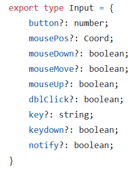
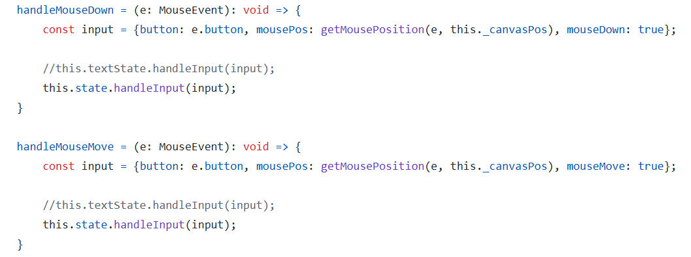
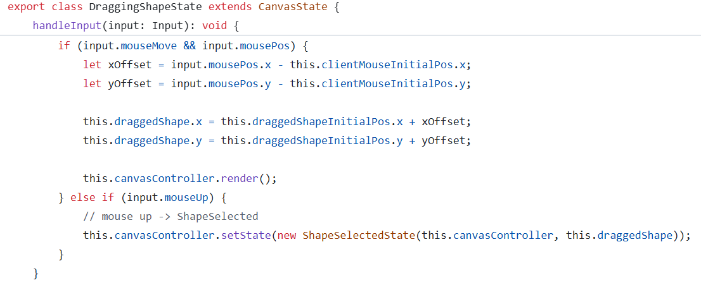

This section displays artifacts relating to the implementation of the diagram editor website's features.
The diagram editor contains a user interface that is standard for document editors. The user interface allows users to create and modify shapes, including their traits such as text, color, and lines. The workspace area that contains the shapes and the user interface are two different elements with different functionality. Separate TypeScript files contain their respective implementations. Communication is necessary between the diagram workspace and the user interface because the state of the diagram editor informs the user interface’s capability. For example, if no shape is currently selected, then the shape customization toolbar should not do anything.

When creating a new shape from the “shapes” user interface menu, its TypeScript file notifies the diagram workspace’s TypeScript file about the added shape. Then, the diagram workspace’s file performs the necessary functions to reflect the change to the user.
The diagram editor allows for the movement, resizing, and connection to lines of shapes. An abstract class called “UtilityPoint” implements the capability for shapes to resize and create lines. Every “Shape” class contains an array with the utility points that implement a certain function. So, every shape has 4 “ResizePoints” that allow the resizing of shapes’ corners, 4 “ResizeEdges” that allow the resizing of a specific edge of a shape, and 4 “ConnectionPoints” that allow the creation of lines. This approach of implementing the shape’s utilities taught me about the principles and usefulness of composition, particularly how easy it is to extend a program’s functionality with it.

With composition and the “UtilityPoint” class, all it takes to add a new utility function to a shape is to create a child class of “UtilityPoint” and add its instantiation(s) to the “Shape” class’s “UtilityPoint” array.
Connections lines in the diagram editor can attach and detach from shapes. The “Connection” class contains the connection line’s functionality. Isolating connection lines to their own classes means that there is less coupling with shapes. Shapes, the basis of the diagram editor, can function normally even if the “Connection” class didn’t exist. Following this approach, only starting and ending coordinates define a connection line, along with any shapes they connect to. This simplicity and decoupling makes the development of the diagram editor and its components much easier.

When a point of a connection line connects to a shape, its coordinate values become constrained to a value of 0 – 1. The value then represents the position the point is at relative to the scale of the shape. For example, a point connected to the bottom middle of a shape would have a coordinate of (0.5, 1), since 0.5 is the horizontal middle of the shape, and 1 is at the vertical bottom. This method allows a connection line to stay relatively in the same position when a shape gets resized.
User input is a key component of the diagram editor, since the workspace depends on user interaction. To represent user input, I implemented a TypeScript type called “Input” that has fields relating to the nature of the input. For example, if a user clicks their mouse, it is represented with the fields “mouseDown” and “mousePos,” since the user clicked at a specific coordinate. The custom input type serves two purposes, simplification and extensibility. Using the input type means that raw user input can be cleaned, allowing the rest of the code to only have to worry about what is important. The input type also allows for easy implementation of other input types. For example, if I were to add mobile functionality, I would only have to add a “tap” and “tapPosition” field.

The question marks denote that the respective field is optional. All fields are set to be optional because input can be vastly different, so an input isn’t always guaranteed to have a mouse position, for example. It is the responsibility of the functionality code to determine what the input type contains.
User input generates and gets cleaned when an event listener captures raw input. There are event listeners for the necessary input types. The two examples shown are the “mousedown” and “mousemove” events. The “Input” type gets generated and filled with the correct fields and values, then that input gets passed to the current diagram state, which then executes the proper functionality. This implementation ensures that user input gets executed properly and in order, meaning that generating input extremely quickly won’t break the code.

There are multiple states that can execute functionality for a given input type. The example in the snippet has a state grayed out, since it is not applicable for that input type. However, the code functions properly with multiple states handling input.
Each state class has a “handleInput” function that executes the proper functionality, depending on what the input contains. Each state class explicitly checks what the input contains and performs functionality based on the input.

States do not have to check every field in the input type, only what is relevant to them. For example, the dragging shape state in the snippet is not concerned with input relating to the keyboard, since dragging depends only on the mouse.